WAYS IN WHICH MODI SARKAR CHANGED INDIA...!
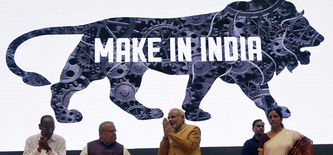
RESPECTED PM
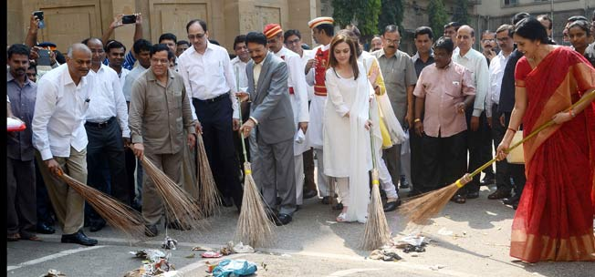
BJP
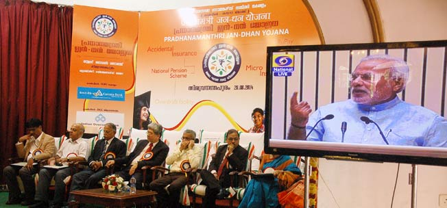
PM
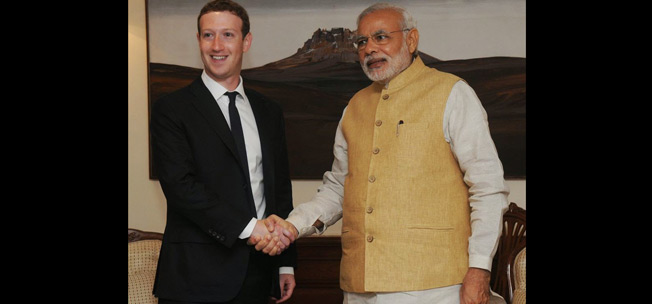
PM
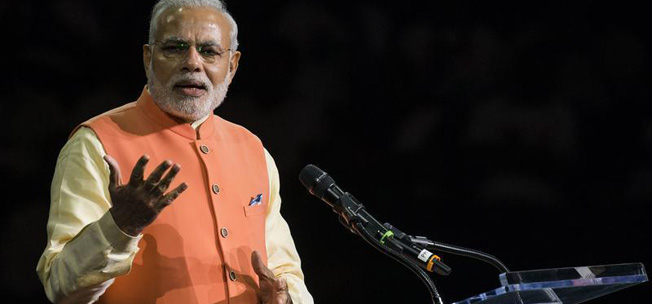
PM
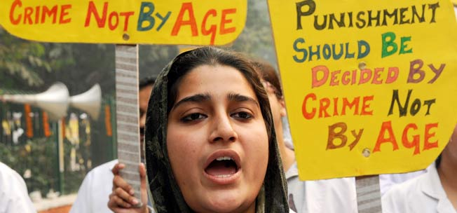
PM
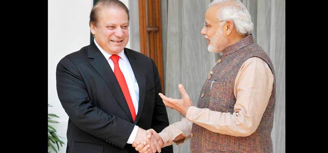
PM
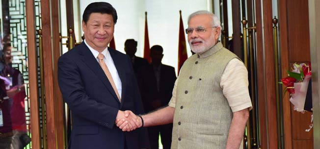
PM
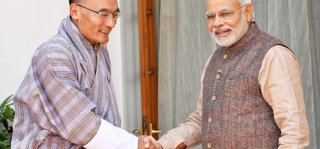
PM
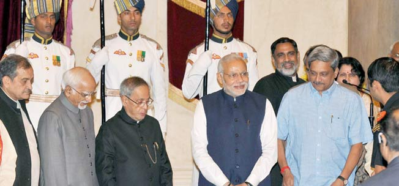
PM
- Launched Jan Dhan Yojana That Brought Crores To India's Banking System
- Juvenile Justice Act Was Reframed To Punish 16-Year-Olds
- Lean Ministry That Prefers Austerity
- Recognising Power Of Neighbours Like Nepal And Bhutan
- Developing Deep Relations With Japan And Bonhomie With China
- Standing Up To Pakistan's Bullying
- Recognising The Potential Of North East India
- Launch Of Make In India Scheme
- Swachh Bharat Abhiyan Campaign That Went Viral
- Getting Its Way With The WTO For Food Security
- Stable Government That Is Unafraid Of Reforms
- Focus On Economic Reforms And Policy Implementation
- Digitising The Country
- Capturing The Diaspora And World's Attention
- Ending Open Defecation By Building Toilets
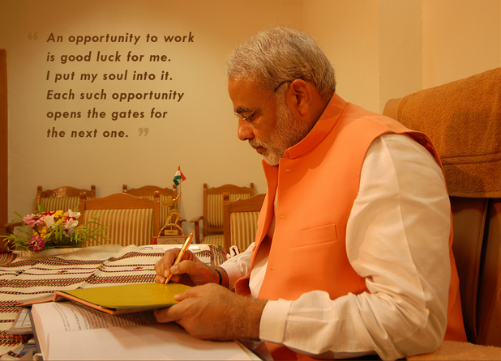